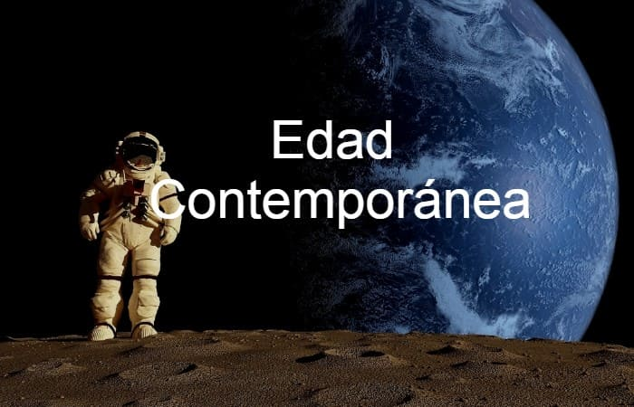
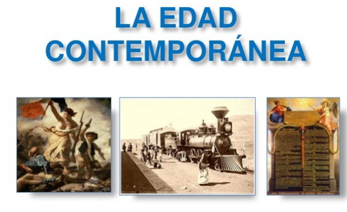

| Etapas | |
|---|---|
| Prehistoria | |
| Edad de los Metales | |
| Edad Antigua | |
| Edad Media | |
| Edad Moderna | |
| Segunda República, Guerra Civil y franquismo | |
| Estatuto de Autonomía | |
| Antecedentes de la autonomía | |
| Reino de Castilla y León |
El siglo XVI es de auge para Castilla y León. Durante este periodo Valladolid fue capital de la Corona y la Contrarreforma católica fundaba sus bases en el misticismo de Teresa de Jesús y San Juan de la Cruz así como en el sustento ideológico de la Escuela de Salamanca de Francisco de Vitoria y las teorías de Bartolomé de las Casas tras la Junta de Valladolid.
Sin embargo, en los siglos siguientes, con el paso de la capital de la Corona a Madrid y la pérdida de centralidad política, empieza un progresivo decrecimiento demográfico y una continuada crisis que perdura hasta el SXIX. En ese momento, la región es eminentemente rural y de economía agrícola.
Con la Ilustración, comienza una incipiente actividad industrial. Muestra de ello son el Canal de Castilla y la llegada del ferrocarril. La industrial harinera y cerealista será la base de este sector en la comunidad, junto a la minería en la cornisa cantábrica y los telares catalanes en el conjunto de España.
Durante la Guerra de la Independencia Española, el mito de los Comuneros resurge como ideal de los liberales españoles. Famoso es el homenaje de El Empecinado a los líderes comuneros en Villalar. En el debate federalista de España en los SXIX y SXX existen proyectos de un Estado federado castellano-leonés de 11 provincias, que no cristalizan por el golpe de Estado franquista y la victoria del bando sublebado de éste en la Guerra Civil Española.
La industrialización pasará de largo en gran parte de la región, provocando un éxodo rural en la segunda mitad del SXX hacia otras zonas industrializadas del país como Bilbao, Madrid y Barcelona. Este hecho solo se verá mitigado en Valladolid gracias a la industria del automóvil.
Con la Transición Española tras la muerte del dictador Francisco Franco resurge un regionalismo castellanoleonés que coge forma en las primeras celebraciones de Villalar de los Comuneros a finales de los años 70. Es la Castilla y León de las novelas de Miguel Delibes y en sus escritos en El Norte de Castilla, de Félix Rodríguez de la Fuente y de las canciones del grupo el Nuevo Mester de Juglaria o Celtas Cortos.
En la actualidad, la crisis demográfica continua en la región, a pesar de la llegada de la alta velocidad ferroviaria y la especialización de la comunidad en las industrias agroalimentaria, energética, de turismo rural y del automóvil.
La Edad Contemporánea es el nombre con el que se designa al periodo histórico comprendido entre la Declaración de Independencia de los Estados Unidos o la Revolución Francesa, y la actualidad. Comprende, si se considera su inicio en la Revolución francesa, de un total de 232 años, entre 1789 y el presente. En este período, la humanidad experimentó una transición demográfica, concluida para las sociedades más avanzadas (el llamado primer mundo) y aún en curso para la mayor parte (los países subdesarrollados y los países recientemente industrializados), que ha llevado su crecimiento más allá de los límites que le imponía históricamente la naturaleza, consiguiendo la generalización del consumo de todo tipo de productos, servicios y recursos naturales que han elevado para una gran parte de los seres humanos su nivel de vida de una forma antes insospechada, pero que han agudizado las desigualdades sociales y espaciales y dejan planteadas para el futuro próximo graves incertidumbres medioambientales.
Los acontecimientos de esta época se han visto marcados por transformaciones aceleradas en la economía, la sociedad y la tecnología que han merecido el nombre de Revolución Industrial, al tiempo que se destruía la sociedad preindustrial y se construía una sociedad de clases presidida por una burguesía que contempló el declive de sus antagonistas tradicionales (los privilegiados) y el nacimiento y desarrollo de uno nuevo (el movimiento obrero), en nombre del cual se plantearon distintas alternativas al capitalismo. Más espectaculares fueron incluso las transformaciones políticas e ideológicas (Revolución liberal, nacionalismo, totalitarismos); así como las mutaciones del mapa político mundial y las mayores guerras conocidas por la humanidad.
La ciencia y la cultura entran en un periodo de extraordinario desarrollo y fecundidad; mientras que el arte contemporáneo y la literatura contemporánea (liberados por el romanticismo de las sujeciones académicas y abiertos a un público y un mercado cada vez más amplios) se han visto sometidos al impacto de los nuevos medios de comunicación de masas (tanto los escritos como los audiovisuales), lo que les provocó una verdadera crisis de identidad que comenzó con el impresionismo y las vanguardias y aún no se ha superado.
En cada uno de los planos principales del devenir histórico (económico, social y político),puede cuestionarse si la Edad Contemporánea es una superación de las fuerzas rectoras de la modernidad o más bien significa el periodo en que triunfan y alcanzan todo su potencial de desarrollo las fuerzas económicas y sociales que durante la Edad Moderna se iban gestando lentamente: el capitalismo y la burguesía; y las entidades políticas que lo hacían de forma paralela: la nación y el Estado.
En el siglo XIX, estos elementos confluyeron para conformar la formación social histórica del estado liberal europeo clásico, surgido tras la crisis del Antiguo Régimen.El Antiguo Régimen había sido socavado ideológicamente por el ataque intelectual de la Ilustración (L'Encyclopédie, 1751) a todo lo que no se justifique a las luces de la razón por mucho que se sustente en la tradición, como los privilegios contrarios a la igualdad (la de condiciones jurídicas, no la económico-social) o la economía moral contraria a la libertad (la de mercado, la propugnada por Adam Smith -La riqueza de las naciones, 1776). Pero, a pesar de lo espectacular de las revoluciones y de lo inspirador de sus ideales de libertad, igualdad y fraternidad (con la muy significativa adición del término propiedad), un observador perspicaz como Lampedusa pudo entenderlas como la necesidad de que algo cambie para que todo siga igual: el Nuevo Régimen fue regido por una clase dirigente (no homogénea, sino de composición muy variada) que, junto con la vieja aristocracia incluyó por primera vez a la pujante burguesía responsable de la acumulación de capital. Esta, tras su acceso al poder, pasó de revolucionaria a conservadora,consciente de la precariedad de su situación en la cúspide de una pirámide cuya base era la gran masa de proletarios, compartimentada por las fronteras de unos estados nacionales de dimensiones compatibles con mercados nacionales que a su vez controlaban un espacio exterior disponible para su expansión colonial.
En el siglo XX este equilibrio inestable se fue descomponiendo, en ocasiones mediante violentos cataclismos (comenzando por los terribles años de la Primera Guerra Mundial, 1914-1918), y en otros planos mediante cambios paulatinos (por ejemplo, la promoción económica, social y política de la mujer). Por una parte, en los países más desarrollados, el surgimiento de una poderosa clase media, en buena parte gracias al desarrollo del estado del bienestar o estado social (se entienda este como concesión pactista al desafío de las expresiones más radicales del movimiento obrero, o como convicción propia del reformismo social) tendió a llenar el abismo predicho por Marx y que debería llevar al inevitable enfrentamiento entre la burguesía y el proletariado. Por la otra, el capitalismo fue duramente combatido, aunque con éxito bastante limitado, por sus enemigos de clase, enfrentados entre sí: el anarquismo y el socialismo (dividido a su vez entre el comunismo y la socialdemocracia). En el campo de la ciencia económica, los presupuestos del liberalismo clásico fueron superados (economía neoclásica, keynesianismo -incentivos al consumo e inversiones públicas para frente a la incapacidad del mercado libre para responder a la crisis de 1929- o teoría de juegos -estrategias de cooperación frente al individualismo de la mano invisible-). La democracia liberal fue sometida durante el período de entreguerras al doble desafío de los totalitarismos estalinista y fascista (sobre todo por el expansionismo de la Alemania nazi, que llevó a la Segunda Guerra Mundial).
En cuanto a los estados nacionales, tras la primavera de los pueblos (denominación que se dio a la revolución de 1848) y el periodo presidido por la unificación alemana e italiana (1848-1871), pasaron a ser el actor predominante en las relaciones internacionales, en un proceso que se generalizó con la caída de los grandes imperios multinacionales (español desde 1808 hasta 1976, portugués desde 1821 hasta 1975; ruso, alemán, austrohúngaro y turco en 1918, tras su hundimiento en la Primera Guerra Mundial) y la de los imperios coloniales (británico, francés, neerlandés y belga tras la Segunda). Si bien numerosas naciones accedieron a la independencia durante los siglos XIX y XX, no siempre resultaron viables, y muchos se sumieron en terribles conflictos civiles, religiosos o tribales, a veces provocados por la arbitraria fijación de las fronteras, que reprodujeron las de los anteriores imperios coloniales. En cualquier caso, los estados nacionales, después de la Segunda Guerra Mundial, devinieron en actores cada vez menos relevantes en el mapa político, sustituidos por la política de bloques encabezados por los Estados Unidos y la Unión Soviética. La integración supranacional de Europa (Unión Europea) no se ha reproducido con éxito en otras zonas del mundo, mientras que las organizaciones internacionales, especialmente la ONU, dependen para su funcionamiento de la poco constante voluntad de sus componentes.
La desaparición del bloque comunista ha dado paso al mundo actual del siglo XXI, en que las fuerzas rectoras tradicionales presencian el doble desafío que suponen tanto la tendencia a la globalización como el surgimiento o resurgimiento de todo tipo de identidades,personales o individuales,colectivas o grupales,muchas veces competitivas entre sí (religiosas, sexuales, de edad, nacionales, culturales, étnicas, estéticas,educativas, deportivas, o generadas por una actitud -pacifismo, ecologismo, altermundialismo- o por cualquier tipo de condición, incluso las problemáticas -minusvalías, disfunciones, pautas de consumo-). Particularmente, el consumo define de una forma tan importante la imagen que de sí mismos se hacen individuos y grupos que el término sociedad de consumo ha pasado a ser sinónimo de sociedad contemporánea.
La denominación «Edad Contemporánea» es un añadido reciente a la tradicional periodización histórica de Cristóbal Celarius, que utilizaba una división tripartita en Edad Antigua, Edad Media y Edad Moderna; y se debe al fuerte impacto que las transformaciones posteriores a la Revolución francesa tuvieron en la historiografía europea continental (específicamente la francesa, española y portuguesa), que les impulsó a proponer un nombre diferente para lo que entendían como estructuras antagónicas: las del Antiguo Régimen anterior y las del Nuevo Régimen posterior. Sin embargo, esa discontinuidad no parece tan marcada para el resto de los historiadores, como los anglosajones que prefieren utilizar el término Later o Late Modern Times o Age («Últimos Tiempos Modernos», «Edad Moderna Tardía» o «Edad Moderna Posterior»), contrastándolo con el término Early Modern Times o Age («Tempranos Tiempos Modernos», «Edad Moderna Temprana» o «Edad Moderna Anterior») ya que siguen usando la periodización de Celarius; mientras que restringen el uso de Contemporary Age para el siglo XX, especialmente para su segunda mitad.
La cuestión de si hubo más continuidad o más ruptura entre la Edad Moderna y la Contemporánea depende, por tanto, de la perspectiva. Si se define la modernidad como el desarrollo de una cosmovisión con rasgos derivados de los valores del antropocentrismo frente a los del teocentrismo medieval (concepciones del mundo centradas en el hombre o en Dios, respectivamente): idea de progreso social, de libertad individual, de conocimiento a través de la investigación científica, etc.; entonces es claro que la Edad Contemporánea es una continuación e intensificación de todos estos conceptos. Su origen estuvo en la Europa Occidental de finales del siglo XV y comienzos del XVI, donde surgió el Humanismo, el Renacimiento y la Reforma Protestante; y se acentuaron durante la denominada crisis de la conciencia europea de finales del siglo XVII, que incluyó la Revolución Científica y preludió a la Ilustración. Las revoluciones de finales del XVIII y comienzos del XIX pueden entenderse como la culminación de las tendencias iniciadas en el período precedente. La confianza en el ser humano y en el progreso científico y tecnológico se plasmó a partir de entonces en una filosofía muy característica: el positivismo; y en los diversos planteamientos religiosos que van del secularismo al agnosticismo, al ateísmo o al anticlericalismo. Sus manifestaciones ideológicas fueron muy dispares, desde el nacionalismo hasta el marxismo pasando por el darwinismo social y los totalitarismos de signo opuesto; aunque las formulaciones políticas y económicas del liberalismo fueron las dominantes, incluyendo notablemente la doctrina de los derechos humanos que, desarrollada a partir de elementos anteriores, dio forma a la democracia contemporánea y se fue extendiendo (como predijo un notable estudio de Alexis de Tocqueville -La democracia en América, 1835-) hasta llegar a ser el ideal más universalmente aceptado de forma de gobierno, con notables excepciones.
Sin embargo, fue la evidencia del triunfo de las fuerzas de la modernidad lo que hizo que precisamente en la Edad Contemporánea se desarrollara un discurso paralelo de crítica a la modernidad, que en su vertiente más radical desembocó en el nihilismo. Es posible seguir el hilo de esta crítica a la modernidad en el romanticismo y su búsqueda de las raíces históricas de los pueblos; en la filosofía de Arthur Schopenhauer, Friedrich Nietzsche y posteriores movimientos (irracionalismo, vitalismo, existencialismo, Escuela de Frankfurt);en los rasgos más experimentales del arte contemporáneo y la literatura contemporánea que, no obstante, reivindican para sí la condición de literatura o arte moderno (expresionismo, surrealismo, teatro del absurdo); en concepciones teóricas como la postmodernidad; y en la violenta resistencia que, tanto desde el movimiento obrero como desde posturas radicalmente conservadoras, se opuso a la gran transformación de economía y sociedad. Superar el ideal ilustrado de progreso y confianza optimista en las capacidades del ser humano, implicaba una noción progresista y de confianza en la capacidad del ser humano que efectúa esa crítica, por lo que esas «superaciones de la modernidad» fueron de hecho nuevas variantes del discurso moderno.
La Revolución industrial es la segunda de las transformaciones productivas verdaderamente decisivas que ha sufrido la humanidad, siendo la primera la Revolución Neolítica que transformó la humanidad paleolítica cazadora y recolectora en el mundo de aldeas agrícolas y tribus ganaderas que caracterizó desde entonces los siguientes milenios de prehistoria e historia.
La transformación de la sociedad preindustrial agropecuaria y rural en una sociedad industrial y urbana se inició propiamente con una nueva y decisiva transformación del mundo agrario, la llamada revolución agrícola que aumentó de forma importante los bajísimos rendimientos propios de la agricultura tradicional gracias a mejoras técnicas como la rotación de cultivos, la introducción de abonos y nuevos productos (especialmente la introducción en Europa de dos plantas americanas: el maíz y la papa). En todos los periodos anteriores, tanto en los imperios hidráulicos (Egipto, Mesopotamia, India o China antiguas), como en la Grecia y Roma esclavistas o la Europa feudal y del Antiguo Régimen, incluso en las sociedades más involucradas en las transformaciones del capitalismo comercial del moderno sistema mundial,era necesario que la gran mayoría de la fuerza de trabajo produjera alimentos, quedando una exigua minoría para la vida urbana y el escaso trabajo industrial, a un nivel tecnológico artesanal, con altos costes de producción. A partir de entonces, empieza a ser posible que los sustanciales excedentes agrícolas alimenten a una población creciente (inicio de la transición demográfica, por la disminución de la mortalidad y el mantenimiento de la natalidad en niveles altos) que está disponible para el trabajo industrial, primero en las propias casas de los campesinos (domestic system, putting-out system) y enseguida en grandes complejos fabriles (factory system) que permiten la división del trabajo que conduce al imparable proceso de especialización, tecnificación y mecanización. La mano de obra se proletariza al perder su sabiduría artesanal en beneficio de una máquina que realiza rápida e incansablemente el trabajo descompuesto en movimientos sencillos y repetitivos, en un proceso que llevará a la producción en serie y, más adelante (en el siglo XX, durante la Segunda revolución industrial), al fordismo, el taylorismo y la cadena de montaje. Si el producto es menos bello y deshumanizado (crítica de los partidarios del mundo preindustrial, como John Ruskin y William Morris), no es menos útil y sobre todo, es mucho más beneficioso para el empresario que lo consigue lanzar al mercado. Los costos de producción disminuyeron ostensiblemente, en parte porque al fabricarse de manera más rápida se invertía menos tiempo en su elaboración, y en parte porque las propias materias primas, al ser también explotadas por medios industriales, bajaron su coste. La estandarización de la producción reemplazó la exclusividad y escasez de los productos antiguos por la abundancia y el anonimato de los productos nuevos, todos iguales unos a otros.
La Revolución industrial iniciada en Inglaterra a mediados del siglo XVIII se extendió sucesivamente al resto del mundo mediante la difusión tecnológica (transferencia tecnológica), primero a Europa Noroccidental y después, en lo que se denominó Segunda revolución industrial (finales del siglo XIX), al resto de los posteriormente denominados países desarrollados (especialmente y con gran rapidez a Alemania, Estados Unidos y Japón; pero también, más lentamente, a Europa Meridional y a Europa Oriental). A finales del siglo XX, en el contexto de la denominada Tercera revolución industrial, los NIC o nuevos países industrializados (especialmente China) iniciaron un rápido crecimiento industrial. No obstante, la influencia de la revolución industrial, desde su mismo inicio se extendió al resto del mundo mucho antes de que se produjera la industrialización de cada uno de los países, dado el decisivo impacto que tuvo la posibilidad de adquirir grandes cantidades de productos industriales cada vez más baratos y diversificados. El mundo se dividió entre los que producían bienes manufacturados y los que tenían que conformarse con intercambiarlos por las materias primas, que no aportaban prácticamente valor añadido al lugar del que se extraían: las colonias y neocolonias (África, Asia y América Latina, tanto antes como después de los procesos de independencia de los siglos XIX y XX).